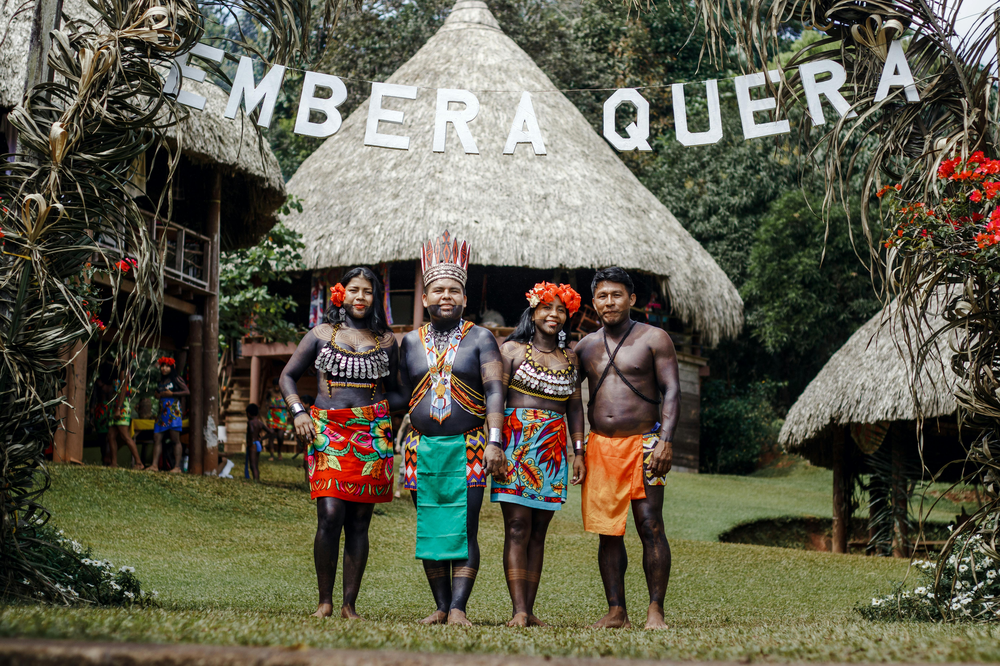

Île de Bioko
45k
Malabo : Cité Coloniale
Architecture espagnole colorée, places ombragées et cathédrale gothique

RetourUn métissage hispano-africain entre jungle luxuriante et modernité
La Guinée Équatoriale est une destination singulière, le seul pays hispanophone d'Afrique. Composée d'une partie continentale et de plusieurs îles, dont Bioko où se situe la capitale Malabo, elle offre un contraste fascinant entre une architecture coloniale espagnole magnifiquement préservée et une nature sauvage impénétrable. Des sommets volcaniques du Pico Basile aux plages de sable blanc immaculé de l'île de Corisco, en passant par les forêts primaires de Monte Alen abritant des gorilles et des éléphants de forêt, ce pays est une terre d'aventure et de raffinement. Sa modernité fulgurante se mêle harmonieusement aux traditions ancestrales des peuples Fang et Bubi, créant une identité culturelle unique et vibrante.
Explorez les 15 merveilles de la Guinée Équatoriale
Architecture espagnole colorée, places ombragées et cathédrale gothique

Un chef-d'œuvre néogothique en bois, emblème majestueux de la capitale

Volcan culminant à 3011m, offrant des vues panoramiques sur le mont Cameroun

Hauts plateaux brumeux, lacs de cratère sacrés et cascades secrètes

Sanctuaire de forêt primaire pour les gorilles, chimpanzés et éléphants

Eaux turquoises et sable blanc éblouissant, le paradis tropical absolu

Capitale continentale dynamique, célèbre pour son front de mer et ses marchés

Île volcanique isolée au charme sauvage et à la culture portugaise-créole unique

Ville pittoresque réputée pour ses fruits de mer et ses vues sur le fleuve

Port de pêche historique entouré de superbes plages de sable volcanique noir

Un joyau architectural moderne à la frontière du Cameroun et du Gabon

La plus grande église d'Afrique Centrale, imposante et magnifiquement décorée
Nouvelle capitale administrative ultramoderne nichée au milieu de la jungle
Région montagneuse fraîche et pittoresque, idéale pour les amateurs de trekking
Petites îles paisibles aux vestiges coloniaux oubliés et eaux cristallines
L'unique héritage hispano-africain au coeur des tropiques.
La culture de la Guinée Équatoriale est un mélange fascinant de traditions bantoues et d'influences espagnoles séculaires. Le pays est fier de sa langue espagnole, parlée avec un accent chantant unique, et de son architecture coloniale qui rappelle les villes d'Andalousie. Les peuples Fang (continent) et Bubi (Bioko) ont su préserver leurs danses rituelles, leurs contes et leur art sculptural raffiné. La musique ébouée et les rythmes modernes comme le 'Bikutsi' animent les soirées de Malabo et Bata. C'est une nation en pleine mutation, où la tradition respectée des anciens côtoie une jeunesse dynamique tournée vers l'avenir.
Le seul pays d'Afrique où l'Espagnol est langue officielle, mêlant raffinement européen et chaleur africaine.
Des sculptures et masques mondialement célèbres, symboles de la spiritualité et de l'identité des peuples équatoriens.
Un héritage espagnol visible dans l'urbanisme de Malabo et la ferveur religieuse catholique.
Une scène musicale vibrante qui fusionne les percussions traditionnelles et les sons électriques modernes.

L'artisanat de prestige de la Guinée Équatoriale. Du bois sculpté au café de Bioko.
 Art
Art
Pièce de collection taillée à la main, représentant l'esthétique raffinée du peuple Fang.
 Gourmet
Gourmet
Café Arabica d'exception cultivé sur les terres volcaniques fertiles de l'île de Bioko.
 Tradition
Tradition
Tissu artisanal aux motifs géométriques, utilisé pour la confection de vêtements de cérémonie.
Réplique fidèle des masques portés lors des rituels traditionnels sur l'île de Bioko.
Huile de palme rouge pressée à froid, issue de plantations durables en Rio Muni.
Paniers et objets décoratifs tissés avec soin par les artisans des marchés de Malabo.

Sipopo, Luxe & Plage

Malabo, Business & Spa

Malabo, Élégance & Confort

Bata, Moderne & Efficace

Malabo, Vue Panoramique

Malabo, Standing & Service
La cuisine de Guinée Équatoriale est une fusion savoureuse de produits tropicaux et d'influences hispaniques.
Le plat national : une soupe de poisson très épicée, parfumée aux herbes locales.
Poulet mijoté dans une sauce onctueuse aux arachides pilées et épices.
Bananes plantains mûres frites, accompagnement incontournable de tous les repas.
Ragoût de feuilles de manioc pilées et cuites dans le lait de coco avec du poisson.
Poisson frais du jour grillé à la perfection, spécialité de l'île de Corisco.
Mélange savoureux de maïs, de haricots et de légumes du potager.
Boisson traditionnelle fermentée à base de canne à sucre, très appréciée.
Papayes, mangues et ananas juteux provenant des vergers luxuriants.
Riz parfumé cuit avec des épices locales et souvent accompagné de poisson.
Dessert traditionnel à base de bananes mûres cuites au four avec du coco.
Viande de chèvre tendre mijotée dans un bouillon riche et parfumé.
Boisson rafraîchissante et vitaminée, symbole du soleil équatorial.
Vivez les moments forts de la culture de la Guinée Équatoriale.
Festivités grandioses célébrant la souveraineté nationale avec défilés et danses (12 Octobre).
Grand rassemblement culturel mettant à l'honneur les danses et traditions du peuple Fang.
Événement majeur réunissant les meilleurs artistes locaux et internationaux sur le front de mer.
La période idéale. Le climat est plus sec et agréable, parfait pour explorer les parcs nationaux et profiter des plages de Corisco sans les pluies diluviennes.
Pluies tropicales fréquentes et intenses. La jungle est magnifique et luxuriante, mais certains accès aux parcs nationaux peuvent être difficiles.
Pays sûr et stable. Vigilance normale requise. Évitez de photographier les bâtiments officiels et les zones militaires.
Vaccin fièvre jaune obligatoire. Traitement antipaludique recommandé. Buvez de l'eau en bouteille. Bons hôpitaux à Malabo et Bata.
Visa obligatoire pour la plupart des nationalités. Procédure à effectuer auprès des ambassades de Guinée Équatoriale avant le départ.
Franc CFA (XAF). L'Euro est largement accepté. Cartes bancaires utilisables dans les grands hôtels et distributeurs à Malabo et Bata.
Expert Architecture & Bioko
Natif de Malabo, Manuel est passionné par l'histoire coloniale et les secrets de la vallée de Moca.
Experte Faune & Monte Alen
Biologiste de formation, Rosa vous guidera en toute sécurité au coeur de la forêt primaire pour observer les gorilles.
Guide Îles & Corisco
Expert des côtes équatoriales, Juan vous fera découvrir les lagunes secrètes et les plus beaux spots de Corisco.